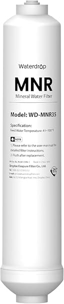

Remineralization Filters for Reverse Osmosis: Are They Worth It?
PureFlow Lab is reader-supported. We may earn a commission when you buy through links in this guide — at no extra cost to you. As an Amazon Associate, we earn from qualifying purchases. See our Disclosure for details.
Reverse osmosis produces exceptionally clean water — but in stripping out contaminants, it also removes the dissolved minerals that give water its taste, which is why pure RO water can taste “flat” to some people. A remineralization filter (often called an alkaline filter) adds a small amount of minerals back, restoring a more natural taste and nudging the pH up. The question is whether you actually need one. Here’s the honest answer, plus the best filters to add to any RO system.
The Short Answer
A remineralization filter adds minerals (mainly calcium and magnesium) back to RO water after the membrane, which improves the taste and slightly raises the pH. Whether it’s worth it comes down to one thing: do you find your RO water tastes flat?
- If yes — a remineralization filter is a cheap, easy fix ($20-40), and well worth it.
- If you like how your RO water tastes — you don’t need one. It’s a taste preference, not a health requirement. The minerals in drinking water are a small part of your intake versus food (see Is Reverse Osmosis Water Good for You?).
You can get remineralization two ways: buy a system that includes it (an “alkaline” RO model), or add an inline cartridge to any existing RO system in a few minutes.
What a Remineralization Filter Actually Does
A remineralization (or alkaline) filter is a small cartridge — usually filled with mineral media like calcium carbonate and magnesium — that the purified RO water passes through on its way to the faucet, after the membrane and post-carbon stage. As the water flows over the media, it picks up a small, controlled amount of minerals. Two effects result:
- Better taste. The added calcium and magnesium restore the “mouthfeel” and natural taste that pure RO water lacks. This is the main reason people add one.
- Higher pH. Pure RO water is mildly acidic (around pH 6-7); the minerals raise it toward neutral or slightly alkaline (pH 7-8.5). This is why “remineralization” and “alkaline” filters are usually the same product.
It does not undo the purification — your water is still RO-clean. It simply adds a measured dose of minerals back to water that was stripped of them.
Are They Worth It? (The Honest Take)
This is a taste-and-preference upgrade, and it’s worth being straight about that:
- Worth it if: you’ve tried your RO water and find it flat or empty-tasting; you prefer mineral or alkaline water; or you want a small amount of minerals back for peace of mind. At $20-40 for a filter, it’s a cheap way to make your water more pleasant to drink — which means you’ll actually drink more of it.
- Not necessary if: you like your RO water as-is, or you’re buying one expecting a health breakthrough. There’s no strong evidence that alkaline water provides health benefits beyond ordinary hydration, and the minerals it adds are minor compared to what you get from food. Add it for taste, not as medicine.
In short: it’s a worthwhile, inexpensive quality-of-life upgrade if RO water tastes flat to you — and skippable if it doesn’t.
Built-In vs Add-On
You have two paths:
Built-in (buy an alkaline RO system). Many systems include a remineralization stage from the factory — the iSpring RCC7AK, Express Water ROALK5D, APEC ROES-PH75, and alkaline tankless models all do. If you’re still shopping and know you want mineralized water, buying an alkaline model is the cleanest route.
Add-on (add a cartridge to any RO). If you already own an RO system — or bought a standard one and decided you want minerals back — you can add an inline remineralization cartridge in a few minutes. It installs as the last stage, after the post-carbon filter and before the faucet, using the system’s 1/4” quick-connect tubing.
The Best Remineralization Filters to Add to Any RO

iSpring FA15 — Alkaline Inline Cartridge
A 10-inch inline alkaline/mineral cartridge that adds to virtually any RO system as a final stage. Adds calcium, magnesium, and other minerals and raises pH. 1,900+ reviews at 4.5 stars, around $22 — the proven universal add-on. ~$22.
Check Price on Amazon →
Waterdrop MNR35 — Remineralization Filter, Quick-Connect
A 1/4” quick-connect remineralization filter that snaps inline with no housing required — the easiest add-on for both standard and tankless systems. Adds minerals and improves taste. 1,600+ reviews at 4.5 stars. ~$27.
Check Price on Amazon →For brand-specific systems, the matching alkaline cartridge from your system’s manufacturer (e.g., the iSpring F9K for iSpring alkaline systems) is also a good fit — see your system’s brand review: iSpring, Waterdrop, Express Water, APEC.
How to Add a Remineralization Filter
It’s a quick job:
- Turn off the RO faucet and the system’s feed/tank valves; relieve pressure.
- Locate the line running from your post-carbon filter to the faucet — the remineralization filter goes here, as the very last stage.
- Cut the tubing and insert the cartridge inline, matching the flow-direction arrow toward the faucet. Quick-connect cartridges (like the Waterdrop MNR35) push right on; 10-inch cartridges (like the iSpring FA15) connect with the included fittings.
- Turn the water back on, check for leaks, and flush a gallon or two before drinking (mineral media rinses at first). Same care as our installation guide.
Comparison Table
| Built-In Alkaline System | Add-On Inline Cartridge | |
|---|---|---|
| Best for | New buyers who want minerals | Existing RO owners |
| Cost | Part of the system price | $20–$40 |
| Install | None (factory-included) | ~10 minutes |
| Examples | iSpring RCC7AK, Express ROALK5D | iSpring FA15, Waterdrop MNR35 |
What It Adds, and the pH Picture
A remineralization filter doesn’t add a lot — and that’s by design. The media (usually calcium carbonate, sometimes with magnesium and trace minerals) dissolves a small, controlled amount into the water as it passes through. You’re not turning RO water into mineral water; you’re nudging it back from “stripped” toward “natural-tasting.”
- Minerals added: mainly calcium and magnesium, often with small amounts of potassium and other trace minerals, depending on the cartridge.
- pH change: pure RO water sits around pH 6-7 (mildly acidic); remineralization raises it toward 7-8.5 (neutral to mildly alkaline). This is why “remineralization” and “alkaline” filters are essentially the same product.
- TDS change: your TDS reading will tick up slightly after a remineralization stage — that’s expected and normal. It reflects the minerals you intentionally added, not a failing membrane.
A quick terminology note: you’ll see these sold as “remineralization,” “alkaline,” or “mineral” filters, and for practical purposes they mean the same thing — a post-membrane stage that adds minerals and raises pH. Don’t overthink the label; focus on whether it fits your system and improves the taste for you.
FAQ
Do I need a remineralization filter for my RO system?
Only if your RO water tastes flat to you. A remineralization filter improves taste and adds a small amount of minerals back — it’s a worthwhile, inexpensive upgrade if you find pure RO water empty-tasting, and unnecessary if you like your water as-is. It’s a taste preference, not a health requirement.
Does a remineralization filter make RO water alkaline?
Yes — adding minerals raises the pH from RO’s mildly acidic ~6-7 up toward neutral or slightly alkaline (7-8.5), which is why these are often sold as “alkaline” filters. The minerals and the higher pH come together.
Is alkaline/remineralized RO water healthier?
There’s no strong evidence that alkaline water provides health benefits beyond normal hydration, and the minerals added are minor compared to your diet. Remineralize for taste and preference, not as a health treatment. For the full picture, see Is Reverse Osmosis Water Good for You?.
How often do I replace a remineralization filter?
Typically every 6-12 months, similar to other post-filters — the mineral media gradually depletes. If you notice the water tasting flat again, it’s time to replace it. Build it into your maintenance schedule.
Will a remineralization filter fit my RO system?
Almost certainly. Inline cartridges connect with standard 1/4” tubing as a final stage, so they work with virtually any under-sink or tankless RO system. Quick-connect models like the Waterdrop MNR35 are the easiest universal fit; 10-inch cartridges like the iSpring FA15 include fittings.
Does adding minerals back reduce the purity of my RO water?
No — the remineralization filter comes after the membrane has already purified the water, and it adds only a small, controlled amount of food-grade minerals. Your water is still RO-clean; it just has some minerals (and better taste) added back.
Will a remineralization filter raise my TDS reading?
Yes, slightly — and that’s normal. The filter intentionally adds a small amount of minerals back, so your TDS meter will read a bit higher after the remineralization stage than the pure RO water before it. This isn’t a sign of a problem; it’s the minerals you added. The water is still RO-purified.
What’s the difference between an alkaline filter and a remineralization filter?
Practically, none — they’re the same kind of product. Adding minerals (remineralization) naturally raises the pH (makes it more alkaline), so the two effects come together and manufacturers use the terms interchangeably. Whether it’s labeled “alkaline,” “mineral,” or “remineralization,” it’s a post-membrane stage that adds minerals and nudges pH up.
Bottom Line
A remineralization filter is a cheap, easy upgrade that fixes the one common complaint about RO water — the flat taste — by adding minerals back and nudging up the pH. It’s worth it if your RO water tastes empty to you, and skippable if it doesn’t. Treat it as a taste improvement, not a health product. If you’re still shopping, an alkaline RO system includes it built-in; if you already own an RO system, add an inline cartridge like the iSpring FA15 or Waterdrop MNR35 in about ten minutes.
Keep Reading
- Is Reverse Osmosis Water Good for You? — the minerals and alkaline-water question, honestly
- Best Reverse Osmosis Systems for Home — including alkaline/remineralizing models
- What Is Reverse Osmosis Water? — why RO water tastes the way it does
- Best Tankless Reverse Osmosis Systems — alkaline tankless options
- RO System Maintenance Schedule — when to replace the cartridge